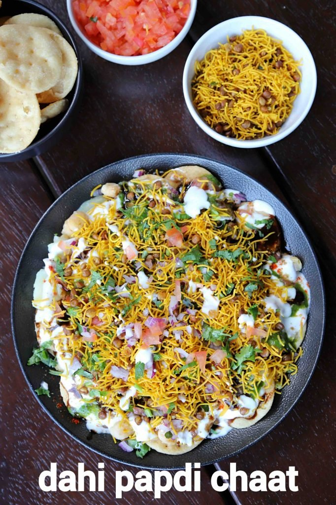

Chaat
Papri chaat (or papdi chaat) is crispy fried-dough wafers served with typical chaat ingredients such as chickpeas, boiled potatoes, yogurt sauce, and tamarind and coriander chutneys; it may also contain pomegranate seeds.
We have to check the ingredients first:-
- 13 papdi
- 3 tbsp potato / aloo (boiled & chopped)
- 3 tbsp chickpea (boiled)
- 3 tbsp onion (finely chopped)
- 5 tbsp curd (whisked)
- 3 tsp green chutney
- 3 tsp tamarind chutney
- pinch chilli powder
- pinch cumin powder
- pinch chaat masala
- pinch salt
- 1 tbsp tomato (finely chopped)
- 3 tbsp sev
- 1 tsp coriander (finely chopped)
Now how to make chaat papdi

INSTRUCTIONS
- firstly, in a serving plate take 13 papdi. to prepare homemade papdi using wheat flour check out my papdi recipe.
- top with 3 tbsp potato and 3 tbsp chickpea.
also, sprinkle 2 tbsp of chopped onions.
- now take 3 tbsp of whisked curd and drizzle over it.
- further, add 2 tsp of green chutney and 2 tsp of tamarind chutney.
- sprinkle chilli powder, cumin powder, chaat masala and salt.
- additionally, add 1 tbsp onion and 1 tbsp tomato.
- now add 1 tbsp of more curd, 1 tsp green chutney and 1 tsp tamarind chutney.
- top with 3 tbsp sev and garnish with 1 tsp coriander.
- finally, enjoy dahi papdi chaat with a hot cup of tea.
Back to home page